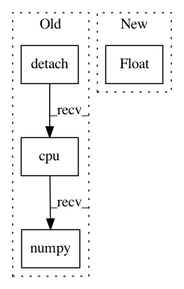

7f2a17f685b1088b50fc1f522e180f10502b6db2,dl/callbacks.py,IOUCallback,on_batch_end,#IOUCallback#Any#,167
Before Change
// msk_vpreds = msk_vpreds.sigmoid()
msk_vpreds = msk_vpreds.detach().cpu().numpy()
valid_msks = valid_msks.detach().cpu().numpy()
iou = get_iou_vector(valid_msks, msk_vpreds)
key = "iou"
state.batch_metrics[key] = iou
After Change
outputs = state.output[self.output_key]
targets = state.input[self.input_key]
jac = jaccard(targets, (outputs > 0).float())
key = "jaccard"
state.batch_metrics[key] = jac
In pattern: SUPERPATTERN
Frequency: 3
Non-data size: 4
Instances
Project Name: Scitator/catalyst
Commit Name: 7f2a17f685b1088b50fc1f522e180f10502b6db2
Time: 2018-11-18
Author: ngxbac.dt@gmail.com
File Name: dl/callbacks.py
Class Name: IOUCallback
Method Name: on_batch_end
Project Name: IBM/adversarial-robustness-toolbox
Commit Name: e21ef336207b0f9ae378c77430d298945827830a
Time: 2019-02-12
Author: M.N.Tran@ibm.com
File Name: art/classifiers/pytorch.py
Class Name: PyTorchClassifier
Method Name: get_activations
Project Name: facebookresearch/Horizon
Commit Name: a7582d472ecd556e5f75e18fb3cf44fa5fce3897
Time: 2018-11-16
Author: jjg@fb.com
File Name: ml/rl/training/sac_trainer.py
Class Name: SACTrainer
Method Name: train